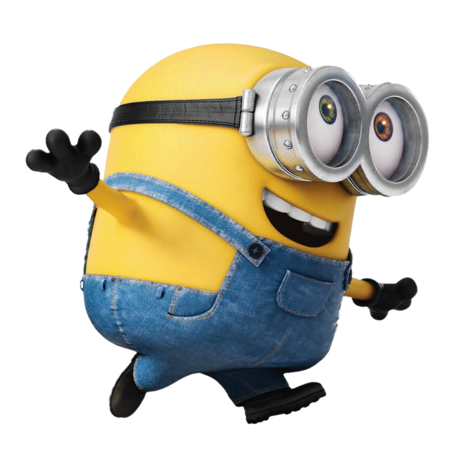

The Rise Of Gru
Minions
Tayang
Daftar
#Minions
#Daftar
Nama
Umur
Jenis Kelamin
Laki Laki
Perempuan
Lokasi
MBK
Ciplaz Lampung
Mall Kartini
Tanggal Nonton
Pilih
23 Juni 2022
24 Juni 2022
25 Juni 2022
26 Juni 2022
27 Juni 2022
Daftar